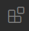
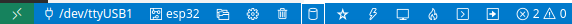

Práctica 1. Introducción al entorno de desarrollo ESP-IDF
Objetivos
- Conocer el entorno de desarrollo para el ESP32
- Ser capaz de compilar, flashear y monitorizar proyectos sencillos basados en ESP-IDF
- Entender el funcionamiento básico de una aplicación ESP-IDF que haga uso de las capacidades WiFi del ESP32
- Personalizar variables de configuración de proyectos ESP-IDF
- Responder a eventos básicos de red en ESP-IDF
Introducción
ESP-IDF (Espressif IoT Development Framework) es el entorno de desarrollo oficial de Espressif para los SoCs ESP32 y ESP32-S. Este entorno de desarrollo y conjunto de herramientas permite desarrollar firmwares eficientes para dichas placas utilizando las interfaces de comunicación WiFi y Bluetooth, así como gestionar múltiples características de los SoCs que iremos desgranando en futuras prácticas.
ESP-IDF utiliza como base FreeRTOS pero añade multitud de componentes que, por ejemplo, implementan los protocolos de comunicación de bajo y alto nivel, usados en los proyectos de Internet de las Cosas.
Ésta práctica es una introducción básica a la puesta en marcha del entorno de desarrollo ESP-IDF. Además, veremos de forma superficial la estructura básica de un programa sencillo desarrollado usando ESP-IDF, así como ejemplos básicos para la puesta en marcha de la interfaz WiFi sobre una placa ESP32.
VSCode y plugin de Espressif para ESP-IDF
Utilizaremos Visual Studio Code como entorno de desarrollo integrado. Este entorno tiene una organización sencilla, como un editor de textos simple, pero es ampliamente configurable con un sistema de plugins fáciles de instalar y configurar.
Lo primero que tendremos que hacer es instalar en nuestro equipo el Visual Studio Code (en los puestos de laboratorio ya está instalado). Una vez instalado, pulsaremos el botón de extensiones en el panel izquierdo:

o pulsaremos Ctrl+Shift+X. En el cuadro de texto que nos muestra escribiremos el nombre de la extensión que queremos instalar, en este caso Espressif ESP-IDF. Seleccionamos la extensión y la instalamos (en los puestos de laboratorio ya está instalado). Esto tardará un poco porque nos instalará también el toolchain de espressif. Asimismo, deberemos seguir las instrucciones para instalar las herramientas adicionales necesarias en nuestro equipo. Para ello, pulsando en la extensión que acabamos de instalar se abrirá otra pesataña, buscamos el apartado How to use y seguimos las instrucciones para la instalación de las herramientas necesarias en nuestro sistema operativo.
En los sistemas Linux, es necesario, en todo caso, que el usuario que estés utilizando
pertenezca al grupo dialout. Para ello puedes editar el fichero /etc/group
añadiendo a tu usuario a la línea que indica el grupo correspondiente, e
iniciando de nuevo tu sesión, o puedes utilizar el comando adduser:
sudo adduser ubuntu dialout
Después tendrás que salir de la sesión y volver a entrar para que el nuevo grupo esté tenido en cuenta.
Instalación manual de las herramientas de ESP-IDF y uso desde terminal
Otra opción es instalar manualmente las herramientas de Espressif siguiendo las instrucciones de su Guía de inicio.
Si queremos usar las herramientas de espressif diréctamente desde el terminal de comandos debemos recordar que tenemos que importar las variables de entorno antes de usar las herramientas. Para ello se proporciona un script (export.sh) disponible en la ruta en la que hayas instalado las herramientas (~/esp/esp-idf por defecto). Entonces, desde dicho directorio ejecutamos:
source export.sh
Puedes añadir esta línea en cualquier fichero de inicio de sesión para no tener que ejecutar el comando cada vez. Por ejemplo, puedes editar el fichero $HOME/.bashrc, y añadir al final de dicho fichero la línea:
source $HOME/esp/esp-idf/export.sh
Si has seguido todos estos pasos correctamente deberías tener acceso a un programa llamado idf.py. Compruébalo por ejemplo pidiendo la versión del comando (el número de subversión podría variar en tu salida):
$ idf.py --version
ESP-IDF v4.1-332-g7b7c64107
Proyecto de ejemplo
En esta primera parte, nos basaremos en un ejemplo sencillo de código desarrollado en base a ESP-IDF. No es el objetivo de esta práctica analizar en detalle los la estructura de dicho código, sino utilizarlo para ilustrar el flujo de trabajo típico en un proyecto ESP-IDF.
Para empezar crearemos en nuestro sistema una carpeta para almacenar nuestros proyectos y abriremos dicha carpeta con Visual Studio Code. Después crearemos en esta carpeta un proyecto a partir de uno de los ejemplos que vienen con el sdk de espressif, concretamente el ejemplo hello_world. Desde Visual Studio Code podemos pulsar la combinación de teclas Shift+Ctrl+P, lo que nos abre la paleta de comandos en la parte central superior de la ventana. En ella escribiremos ESP-IDF, para filtrar las opciones de ESP-IDF, y buscaremos la entrada ESP-IDF: Show Examples Projects. Al seleccionarla nos abrirá una pestaña con los ejemplos que vienen con el SDK. Seleccionamos el ejemplo Hello World y, cuando nos pregunte, la carpeta donde queremos guardar el proyecto. Esto copiará el ejemplo que viene con las herramientas (~/esp/esp-idf/examples por defecto) a nuestra carpeta de trabajo.
Compilación
Para compilar el proyecto desde Visual Studio Code basta con pulsar el botón de compilación en la barra inferior de comandos:

Otras opciones son seleccionar la opción ESP-IDF: Build Project en la paleta de comandos o usar la combinación Ctrl+E seguido de B. Finalmente, otra opción es utilizar el comandoidf.py desde cualquier terminal:
idf.py build
Si todo ha ido bien, en el directorio build se habrán generado los objetos
y binarios listos para ser flasheados en el ESP32.
Volcado a memoria flash (Flasheado)
Para programar la placa del ESP32 podemos pulsar el botón de flash de la barra de comandos, seleccionar la opción ESP-IDF: Flash your project o pulsar Ctrl+E seguido de F. Asimismo, podemos usar la herramienta idf.py desde un terminal:
idf.py -p PUERTO flash
En este punto, el ESP32 debe estar conectado utilizando el cable microUSB, y si estás trabajando en una máquina virtual, debe haberse hecho visible a la misma (por ejemplo, en VirtualBox, a través del menú Dispositivos->USB->Silicon Labs USB to UART Bridge Controller).
En un sistema Linux la salida del comando dmesg tras la conexión del dispositivo
te proporcionará información sobre el PUERTO que debes utilizar en el proceso
de flasheado y montorización posterior.
Monitorización
Podemos monitorizar la salida estándar del programa que se está ejecutando en el ESP32, utilizando el puerto serie virtual creado al conectar el dispositivo al equipo. Desde el Visual Studio Code podemos pulsar el botón de monitorización en la barra de comandos de IDF (el que parece una pantalla) para comenzar a ver la salida estándar en el terminal integrado. Alternativamente podemos ejecutar el comando ESP-IDF: Monitor your device en la paleta de comandos o ejecutar en el terminal el comando:
idf.py -p PUERTO monitor
Análisis de un proyecto sencillo (Hola, mundo) en ESP-IDF
Observa la estructura general del directorio hello_world que compilaste
anteriormente. Específicamente, nos interesará inspeccionar la estructura
básica de un programa principal para ESP-IDF, en este caso hello_world_main.c.
#include <stdio.h>
#include "sdkconfig.h"
#include "freertos/FreeRTOS.h"
#include "freertos/task.h"
#include "esp_system.h"
#include "esp_spi_flash.h"
void app_main(void)
{
printf("Hello world!\n");
/* Print chip information */
esp_chip_info_t chip_info;
esp_chip_info(&chip_info);
printf("This is %s chip with %d CPU cores, WiFi%s%s, ",
CONFIG_IDF_TARGET,
chip_info.cores,
(chip_info.features & CHIP_FEATURE_BT) ? "/BT" : "",
(chip_info.features & CHIP_FEATURE_BLE) ? "/BLE" : "");
printf("silicon revision %d, ", chip_info.revision);
printf("%dMB %s flash\n", spi_flash_get_chip_size() / (1024 * 1024),
(chip_info.features & CHIP_FEATURE_EMB_FLASH) ? "embedded" : "external");
printf("Minimum free heap size: %d bytes\n", esp_get_minimum_free_heap_size());
for (int i = 10; i >= 0; i--) {
printf("Restarting in %d seconds...\n", i);
vTaskDelay(1000 / portTICK_PERIOD_MS);
}
printf("Restarting now.\n");
fflush(stdout);
esp_restart();
}
A alto nivel, la función app_main es el punto de entrada a todo programa
desarrollado usando ESP-IDF. De modo más específico, tras la carga del
sistema,
la llamada tarea principal (main task) ejecuta el código proporcionado por
el usuario e implementado en la función app_main. Tanto el tamaño de pila
asignado como la prioridad de esta tarea puede ser configuradas por el
desarrollador a través del sistema de configuración de ESP-IDF (lo veremos más
adelante). Normalmente, esta función se utiliza para llevar a cabo tareas
iniciales de configuración o para crear y lanzar a ejecución otras tareas. Se puede implementar cualquier funcionalidad dentro de la función app_main o invocar a otras funciones que la implementen.
En este ejemplo, se muestra en primer lugar información genérica sobre el SoC que está ejecutando el firmware:
/* Print chip information */
esp_chip_info_t chip_info;
esp_chip_info(&chip_info);
printf("This is %s chip with %d CPU cores, WiFi%s%s, ",
CONFIG_IDF_TARGET,
chip_info.cores,
(chip_info.features & CHIP_FEATURE_BT) ? "/BT" : "",
(chip_info.features & CHIP_FEATURE_BLE) ? "/BLE" : "");
printf("silicon revision %d, ", chip_info.revision);
printf("%dMB %s flash\n", spi_flash_get_chip_size() / (1024 * 1024),
(chip_info.features & CHIP_FEATURE_EMB_FLASH) ? "embedded" : "external");
printf("Minimum free heap size: %d bytes\n", esp_get_minimum_free_heap_size());
A continuación, dentro de un bucle sencillo, el sistema muestra un mensaje y
después suspende su ejecución por un determinado período de tiempo
utilizando la función de FreeRTOS vTaskDelay. Esta función recibe como parámetro el número de ticks de reloj que se desea
suspender la ejecución de la tarea, que puede calcularse dividiendo el tiempo que deseamos suspender la tarea por lo que la duración de un tick. FreeRTOS proporciona la constante portTIC_PERIOD_MS, que nos da la duración en milisegundos de un tick:
for (int i = 10; i >= 0; i--) {
printf("Restarting in %d seconds...\n", i);
vTaskDelay(1000 / portTICK_PERIOD_MS);
}
Finalmente, la tarea reinicia el sistema tras la finalización de la tarea principal:
printf("Restarting now.\n");
fflush(stdout);
esp_restart();
Entregable 1
Modifica el período de suspensión de la tarea para que sea mayor o menor, y comprueba que efectivamente esto modifica el comportamiento del firmware cargado.
Entregable 2
Modifica el programa para que se compruebe debidamente si el SoC tiene capacidades WiFi y muestre la información correspondiente por la salida estándar (para ello, puedes consultar la siguiente página).
Creación de tareas
El anterior proyecto puede replantearse para que no sea la tarea principal la que ejecute la lógica del programa. Para ello, es necesario introducir brevemente la API básica para la gestión de tareas (en nuestro caso sólo necesitamos crear una tarea). Verás muchos más detalles sobre esta API en la asignatura ANIOT, por lo que no veremos aquí más detalles de los estrictamente necesarios.
La función xTaskCreate (incluida en task.h) permite la creación de nuevas
tareas:
BaseType_t xTaskCreate( TaskFunction_t pvTaskCode,
const char * const pcName,
configSTACK_DEPTH_TYPE usStackDepth,
void *pvParameters,
UBaseType_t uxPriority,
TaskHandle_t *pxCreatedTask
);
Concretamente, crea una nueva tarea y la añade a la lista de tareas listas para ejecución, recibiendo como parámetros:
pvTaskCode: La dirección de la función de entrada para la tarea. Las tareas suelen implementarse como un bucle infinito. No deberen retornar de la función de entrada ni finalizar abruptamente. Para finalizar correctamente una tarea ésta debe ejecutar la función vTaskDelete con el parámetro NULL. Alternativamente, puede usarse esta función para matar otra tarea, pasándo como argumento a vTaskDelete la dirección del manejador inicializado en el proceso de creación (último parámetro en la creación). Por ejemplo, la siguiente función presenta un esquema de código correcto para la función de entrada de una tarea en FreeRTOS.
void vATaskFunction( void *pvParameters )
{
for( ;; )
{
-- Task application code here. --
}
/* Tasks must not attempt to return from their implementing
function or otherwise exit. In newer FreeRTOS ports
attempting to do so will result in an configASSERT() being
called if it is defined. If it is necessary for a task to
exit then have the task call vTaskDelete( NULL ) to ensure
its exit is clean. */
vTaskDelete( NULL );
}
pcName: Nombre (en forma de cadena) descriptivo de la tarea a ejecutar, típicamente usado en tiempo de depuración.usStackDepth: Número de palabras a alojar para utilizar como pila para la tarea.pvParameters: Parámetros a proporcionar a la función de entrada para la tarea.uxPriority: Prioridad asignada a la tarea.pxCreatedTask: Manejador opcional para la tarea.
Así, la funcionalidad del programa Hola, mundo que hemos analizado
anteriormente, podría reestrcturarse en base a una única tarea, cuya función de entrada podría ser (al reiniciar el sistema no necesitamos terminar correctamente la tarea ejecutando vTaskDelete):
void hello_task(void *pvParameter)
{
printf("Hello world!\n");
for (int i = 10; i >= 0; i--) {
printf("Restarting in %d seconds...\n", i);
vTaskDelay(1000 / portTICK_RATE_MS);
}
printf("Restarting now.\n");
fflush(stdout);
esp_restart();
}
La función app_main se limitaría entonces a crear la tarea:
void app_main()
{
nvs_flash_init();
xTaskCreate( &hello_task, "hello_task", 2048, NULL, 5, NULL );
}
Entregable 3
Implementa una modificación del programa hello_world que implemente
y planifique dos tareas independientes con distinta funcionalidad (en este
caso, es suficiente con mostrar por pantalla algún mensaje) y distintos
tiempos de suspensión. Comprueba que, efectivamente, ambas tareas se
ejecutan concurrentemente.
Personalización del proyecto
ESP-IDF utiliza la biblioteca kconfiglib para proporcionar un sistema de
configuracion de proyectos en tiempo de compilación sencillo y extensible. Para
ilustrar su funcionamiento, utilizaremos el ejemplo blink que puedes encontrar
en la distribución de ESP-IDF. Crea un nuevo proyecto a partir de dicho ejemplo.
Para configurar un proyecto ESP-IDF se puede pulsar el botón ESP-IDF SDC Configuration Editor en la barra de comandos de IDF, o bien ejecutando dicho comando en la paleta de comandos de VSCode o ejecutando el comando menuconfig en el terminal:
idf.py menuconfig
Al ejecutar el comando se nos mostrará un menún por el que podremos navegar usando el ratón (o las teclas del cursor si lo ejecutamos desde terminal). El menú nos presenta unas opciones de carácter general, que permitirán configurar las características específicas del proyecto a compilar (por ejemplo, seleccionando los componentes que deseemos habilitar en la construcción del mismo).
Nota
Navega por las opciones que aparecen en los menús de configuración para familiarizarte con ellos. Aprende a utilizar el menú de configuración, pues lo utilizarás en futuras prácticas.
En el proyecto blink, observa que una de las opciones del menú de navegación,
llamada Example configuration, incluye una opción llamada Blink GPIO number.
Esta entrada define el número de pin GPIO al que se conecta el LED que el programa hará parpadear. Esta opción de configuración definirá en tiempo de compilación el valor de una constante llamada CONFIG_BLINK_GPIO, que podemos utilizar en el código para obtener el valor que le haya asignado el usuario durante la configuración del proyecto.
Nota
Observa el uso que da el código del proyecto blink a la constante
CONFIG_BLINK_GPIO.
Esta opción de configuración no forma parte de las opciones por defecto de
ESP-IDF, sino que ha sido añadida por los desarrolladores del proyecto blink.
Observa y estudia el formato y contenido del fichero main/Kconfig.projbuild
que se proporciona como parte del fichero. En él, se definen las características
(nombre, rango, valor por defecto y descripcion) de la opción de configuración
a definir.
Entregable 4
Modifica el proyecto hello_world para que defina dos opciones de
configuración que permitán definir el tiempo de espera de cada una de las
dos tareas que hayas definido en tu anterior solución. Haz uso de ellas en
tu código y comprueba que efectivamente su modificación a través del sistema
de menús permite una personalización del comportamiento de tus códigos.
Escaneado de redes WiFi
A modo de ejemplo, y en preparación para los códigos con los que trabajaremos en futuras prácticas, vamos a analizar a continuación un ejemplo concreto de firmware cuya tarea es el escaneado de redes inalámbricas al alcance del ESP32, y su reporte a través de su salida estándar (que podremos ver gracias a la facilidad de monitorización del programa). Para cada red escaneada, se reportarán sus características principales.
Tarea
Compila, flashea y monitoriza el ejemplo scan situado en el directorio
examples/wifi/scan. Crea un nuevo proyecto a partir de este ejemplo y amplia el número máximo de redes a escanear a 20 a través del menú de configuración del ejemplo.
Crea un punto de acceso WiFi con tu teléfono móvil y observa que,
efectivamente, es escaneado por el ejemplo.
Observa su funcionamiento. El firmware simplemente escanea un subconjunto de las redes disponibles, reportando algunas de sus características (por ejemplo, SSID, modo de autenticación o canal primario).
Tarea
Analiza el código de la función wifi_scan (tarea principal).
Céntrate especialmente en las líneas que permiten activar y configurar el
escaneado de redes. Intenta entender el funcionamiento general del programa,
consultando y apuntando el cometido de cada línea, con especial interés a
aquellas funciones con prefijo esp_wifi_*. Si tienes dudas puede consultar la documentación oficial de ESP-IDF.
Gestión de eventos de red
El segundo ejemplo que estudiarems es un programa para la conexión del ESP32 a un punto de acceso existente. Este ejemplo nos permitirá observar, a grandes rasgos, el sistema de gestión de eventos en FreeRTOS/ESP-IDF, que permite gestionar la respuestas a eventos de red, como por ejemplo la obtención de dirección IP o la conexión exitosa a un punto de acceso.
Nota
Crea un proyecto a partir del ejempl station situado en el directorio
examples/wifi/getting_started. Compilalo, flashealo y monitoriza su salida estándar. Acuerdate de modificar el SSID de la red al que conectará, así como la contraseña elegida a través del sistema de menús de configuración.
Observa su funcionamiento. El firmware simplemente inicializa el dispositivo en modo station (en contraposición al modo Access Point, que veremos en la próxima sesión), realizando una conexión al punto de acceso preconfigurado a través del menú de configuración.
Analiza el código de la función wifi_init_sta. Esta función, que implementa
la tarea principal, se divide básicamente en dos partes:
- Gestión de eventos. Observa el mecanismo mediante el cual se registra y se asocia la recepción de un evento a la ejecución de un manejador o función determinada.
Nota
Responde a la siguiente pregunta de forma razonada: ¿Qué eventos se asocian a la ejecución de qué función en el firmware que estás estudiando?
- Configuración de la conexión a un punto de acceso. La configuración de la
conexión se realiza a través de los campos correspondientes de una estructura
de tipo
wifi_config_t. Observa los campos básicos que necesita, cómo fuerza el uso de WPA2 y cómo recoge los datos de conexión (SSID y contraseña) a través del sistema de configuración. Observa también cómo, una vez realizadas dichas personalizaciones, inicializa el sistema de comunicación inalámbrica a través deesp_wifi_start(). Consulta la documentación relativa a dichas funciones y toma nota de aquellos aspectos que consideres más relevantes.
Entregable 7
Modifica el firmware para que el handler de tratamiento de la obtención de una dirección IP sea independiente del tratamiento del resto de eventos del sistema WiFi que ya se están considerando. Comprueba que, efectivamente sigue observándose la salida asociada a dicho evento, aun cuando ambas funciones sean independientes. Entrega el código modificado.